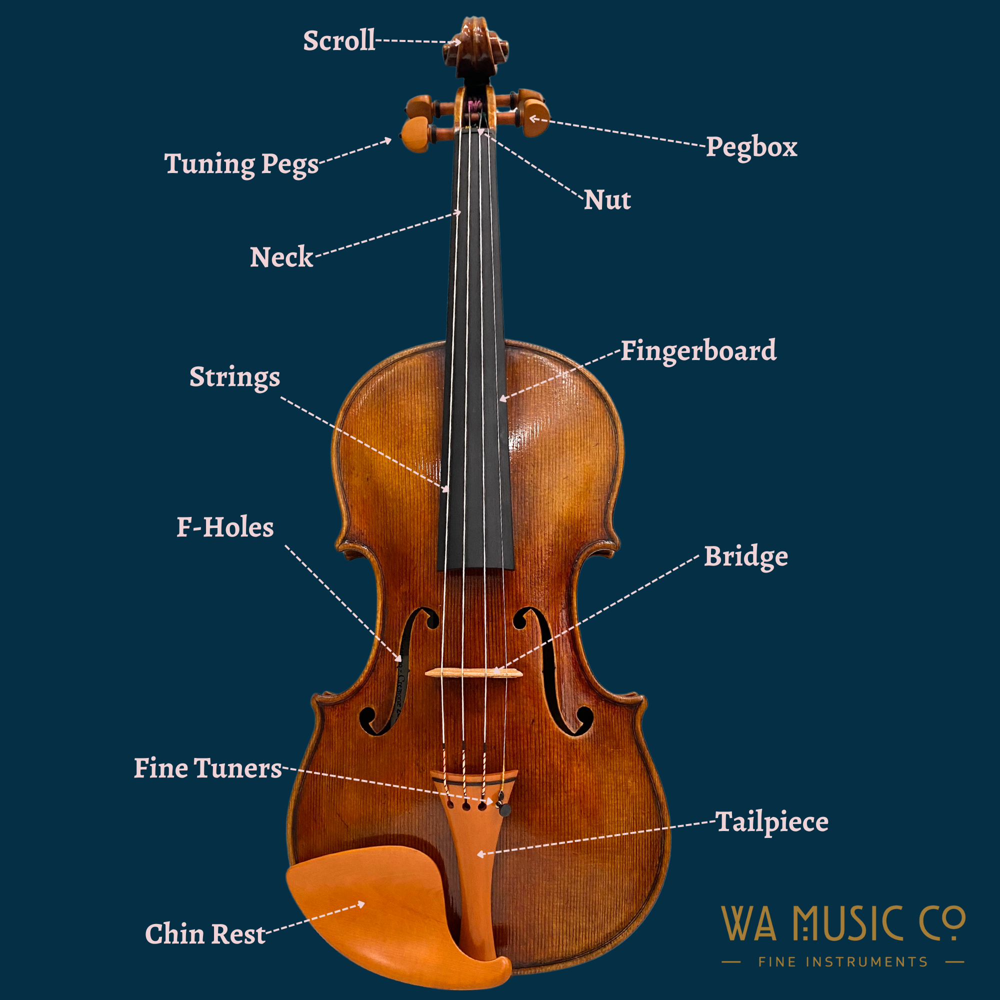
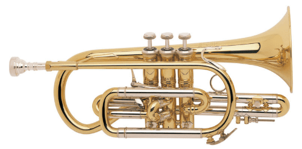
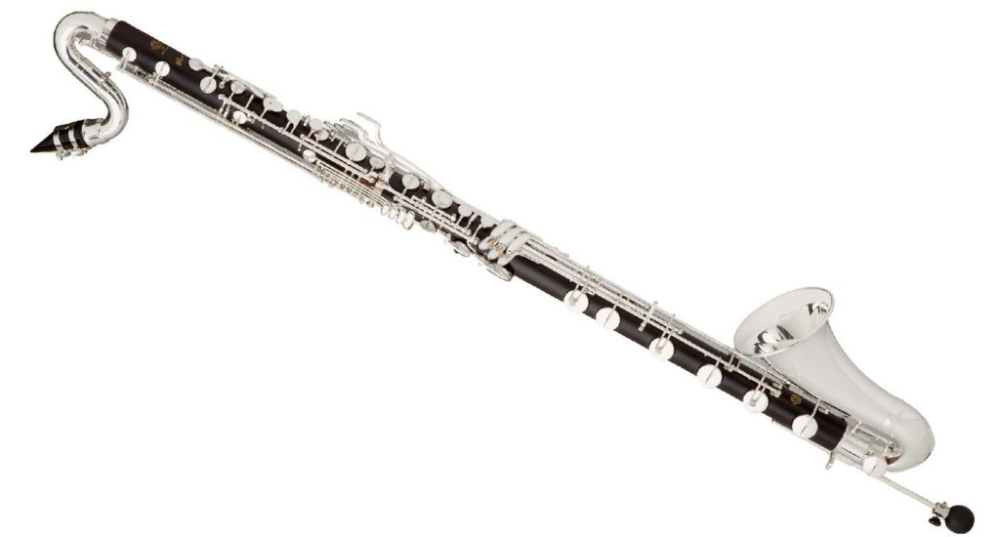
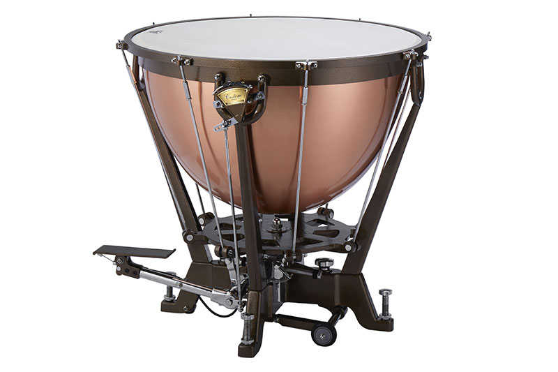
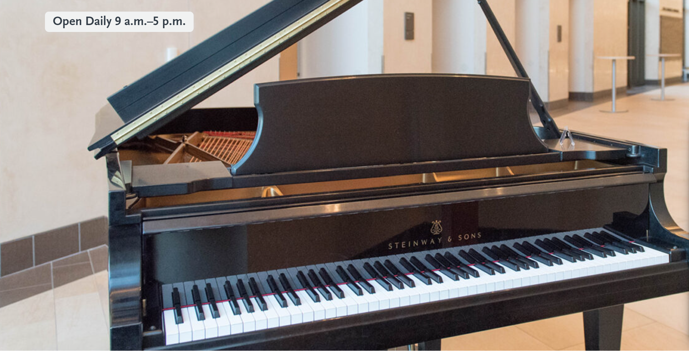
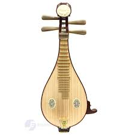
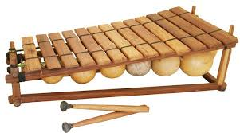

| 1 |
String |
Guitar |
Europe |
Strumming or plucking strings. |
Acoustic, Electric, Classical |
 |
| 2 |
Brass |
Trumpet |
Ancient Egypt |
Valved instrument with a bright, clear tone. |
Bach, Miles Davis |
 |
| 3 |
Woodwind |
Flute |
Ancient Europe, Asia |
Sound by blowing air across an opening. |
Transverse, Piccolo, Recorder |
 |
| 4 |
Percussion |
Drums |
Ancient Mesopotamia |
Sound by striking or shaking. |
Snare, Djembe, Timpani |
 |
| 5 |
Keyboard |
Piano |
Italy |
Sound by striking keys with hammers. |
Grand, Upright, Digital |
 |
| 6 |
Electronic |
Synthesizer |
USA |
Sound generated electronically, programmable. |
Moog, Roland, Yamaha |
|
| 7 |
Plucked String |
Harp |
Ancient Mesopotamia |
Strings are plucked with fingers. |
Lever, Pedal, Electric Harp |
 |
| 8 |
Wind |
Bagpipes |
Scotland |
Air blown through pipes to produce sound. |
Great Highland Bagpipe, Uilleann Pipes |
|
| 9 |
Woodwind |
Clarinet |
Germany |
Single reed instrument with a rich, smooth tone. |
Bass Clarinet, Oboe, Bassoon |
|
| 10 |
Idiophones |
Marimba |
Africa |
Tuned wooden bars struck with mallets. |
Orchestras, Solo Performances |
 |